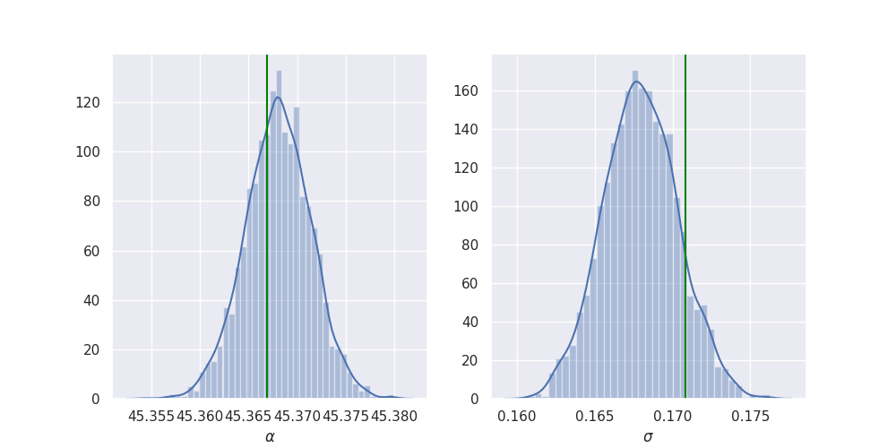
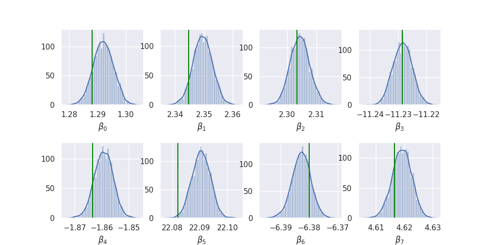
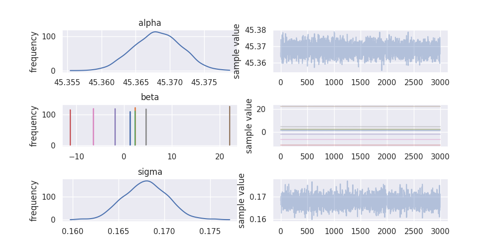

Uber's pyro as described in Pyro: Deep Universal Probabilistic Programming sounds pretty cool so I thought I'd give it a whirl. They seem to have focussed their efforts on the variational inference algorithms but still have an implementations of NUTS. In a bid to get up and running quick I thought I'd start with the MCMC based algorithms since they don't require the user to specify a variational distribution to approximate the posterior (known in pyro as a "guide"). I'll check out the variational stuff soon.
I'm not even going to bother describing the simulated data and employed model as it is so easy to see how it all works in the python code below - that is largely because specifying a model in pyro is super nice! Regardless, the point of this is not to come up with a good model but to explore how pyro works, and compare it to stan (which I am much more familiar with).
import torch import pyro import pyro.distributions as dist import pyro.infer.mcmc as mcmc import time as tm torch.multiprocessing.set_sharing_strategy("file_system") pyro.set_rng_seed(42) NUM_WARMUP = 1000 NUM_SAMPLES = 1000 NUM_CHAINS = 3 N = 2500 P = 8 alpha_true = dist.Normal(42.0, 10.0).sample() beta_true = dist.Normal(torch.zeros(P), 10.0).sample() sigma_true = dist.Exponential(1.0).sample() eps = dist.Normal(0.0, sigma_true).sample([N]) x = torch.randn(N, P) y = alpha_true + x @ beta_true + eps def model(x, y): alpha = pyro.sample("alpha", dist.Normal(0.0, 100.0)) beta = pyro.sample("beta", dist.Normal(torch.zeros(P), 10.0)) sigma = pyro.sample("sigma", dist.HalfNormal(10.0)) mu = alpha + x @ beta return pyro.sample("y", dist.Normal(mu, sigma), obs=y) kernel = mcmc.NUTS(model, jit_compile=True) start = tm.time() posterior = mcmc.MCMC(kernel, num_samples=NUM_SAMPLES, warmup_steps=NUM_WARMUP, num_chains=NUM_CHAINS, disable_progbar=True).run(x, y) pyro_time = tm.time() - start
The most frustrating part of this was trying to find out why the mcmc call would
fail when I set num_chains > 1, and I still don't really get why, but it was
fixed via torch.multiprocessing.set_sharing_strategy("file_system").
But that's it! We've simulated some data, defined a model, and inferred the model parameters using NUTS with just a few lines of code. Unfortunately I found it a bit more effort to actually examine the inference output, I think this is one area where pyro is lacking (or I have struggled with the documentation). Nevertheless, I took some code from the pyro baseball example and got this:
import pandas as pd def get_site_stats(array, name): if len(array.shape) == 1: names = [name] else: names = ["{}[{}]".format(name, i) for i in range(array.shape[1])] df = pd.DataFrame(array, columns=names).transpose() return df.apply(pd.Series.describe, axis=1)[["mean", "std", "25%", "50%", "75%"]] def summary(posterior, sites, diagnostics=True): marginal = posterior.marginal(sites) site_stats = {} for site in sites: marginal_site = marginal.support(flatten=True)[site] site_stats[site] = get_site_stats(marginal_site.numpy(), site) if diagnostics and posterior.num_chains > 1: diag = marginal.diagnostics()[site] site_stats[site] = site_stats[site].assign( n_eff=diag["n_eff"].numpy(), r_hat=diag["r_hat"].numpy()) return site_stats sites = ["alpha", "beta", "sigma"] df = pd.concat([s for s in summary(posterior, sites).values()]) print(df)
| mean | std | 25% | 50% | 75% | neff | rhat | |
|---|---|---|---|---|---|---|---|
| alpha | 45.37 | 0 | 45.37 | 45.37 | 45.37 | 3078.48 | 1 |
| beta[0] | 1.29 | 0 | 1.29 | 1.29 | 1.29 | 3047.63 | 1 |
| beta[1] | 2.35 | 0 | 2.35 | 2.35 | 2.35 | 2774.76 | 1 |
| beta[2] | 2.3 | 0 | 2.3 | 2.3 | 2.31 | 3313.62 | 1 |
| beta[3] | -11.23 | 0 | -11.23 | -11.23 | -11.23 | 2983.01 | 1 |
| beta[4] | -1.86 | 0 | -1.86 | -1.86 | -1.86 | 3293.98 | 1 |
| beta[5] | 22.09 | 0 | 22.09 | 22.09 | 22.09 | 3107.56 | 1 |
| beta[6] | -6.38 | 0 | -6.38 | -6.38 | -6.38 | 3048.57 | 1 |
| beta[7] | 4.62 | 0 | 4.62 | 4.62 | 4.62 | 3366.54 | 1 |
| sigma | 0.17 | 0 | 0.17 | 0.17 | 0.17 | 2201.37 | 1 |
import seaborn as sns import matplotlib.pyplot as plt sns.set() plt.rcParams["figure.figsize"] = (10, 5) def add_plot(x, axis, true, label): sns.distplot(x, ax=axis, axlabel=label) axis.axvline(true, color="green") samples = posterior.marginal(sites).support(flatten=True) fig, axes = plt.subplots(1, 2) add_plot(samples["alpha"], axes[0], alpha_true, r"$\alpha$") add_plot(samples["sigma"], axes[1], sigma_true, r"$\sigma$") plt.savefig("../img/alpha_sigma_summary.png") plt.close()

import itertools as it fig, axes = plt.subplots(2, P // 2) plt.subplots_adjust(hspace=0.5) for i, (j, k) in enumerate(it.product(range(2), range(P // 2))): add_plot(samples["beta"][:, i], axes[j][k], beta_true[i], r"$\beta_{}$".format(i)) plt.savefig("../img/beta_summary.png") plt.close()

So it looks like it works quite nicely!
Overall I found pyro quite nice to use for sampling (as I said earlier, I will try the variational inference later) but it just doesn't have all the extra goodies that stan has like bayesplot.
For completeness, I also coded up an equivalent model in stan:
The stan model definition doesn't look dissimilar to the pyro model function:
data { int<lower = 0> N; int<lower = 0> P; matrix[N, P] x; vector[N] y; } parameters { real alpha; vector[P] beta; real<lower = 0.0> sigma; } model { alpha ~ normal(0.0, 100.0); beta ~ normal(0.0, 10.0); sigma ~ normal(0.0, 10.0); y ~ normal(alpha + x * beta, sigma); }
import pystan as stan stan_data = {"N": N, "P": P, "x": x.numpy(), "y": y.numpy()} stan_model = stan.StanModel(stan_file) start = tm.time() stan_fit = stan_model.sampling(data=stan_data, iter=NUM_WARMUP + NUM_SAMPLES, warmup=NUM_WARMUP, chains=NUM_CHAINS) stan_time = tm.time() - start
I found getting the equivalent inference information out of stan much easier:
print(stan_fit)
Inference for Stan model: anon_model_eb90b2beb3bbb2831cfb01cc5ce60f76.
3 chains, each with iter=2000; warmup=1000; thin=1;
post-warmup draws per chain=1000, total post-warmup draws=3000.
mean se_mean sd 2.5% 25% 50% 75% 97.5% n_eff Rhat
alpha 45.37 4.8e-5 3.4e-3 45.36 45.37 45.37 45.37 45.37 5143 1.0
beta[1] 1.29 4.8e-5 3.5e-3 1.29 1.29 1.29 1.29 1.3 5262 1.0
beta[2] 2.35 4.4e-5 3.3e-3 2.34 2.35 2.35 2.35 2.36 5702 1.0
beta[3] 2.3 5.1e-5 3.5e-3 2.3 2.3 2.3 2.31 2.31 4752 1.0
beta[4] -11.23 4.7e-5 3.4e-3 -11.23 -11.23 -11.23 -11.23 -11.22 5264 1.0
beta[5] -1.86 4.6e-5 3.4e-3 -1.87 -1.86 -1.86 -1.86 -1.85 5451 1.0
beta[6] 22.09 4.3e-5 3.2e-3 22.08 22.09 22.09 22.09 22.1 5542 1.0
beta[7] -6.38 4.8e-5 3.2e-3 -6.39 -6.38 -6.38 -6.38 -6.38 4662 1.0
beta[8] 4.62 4.5e-5 3.3e-3 4.61 4.62 4.62 4.62 4.63 5366 1.0
sigma 0.17 3.7e-5 2.4e-3 0.16 0.17 0.17 0.17 0.17 4192 1.0
lp__ 3205.9 0.06 2.21 3200.8 3204.6 3206.2 3207.5 3209.2 1283 1.0
Samples were drawn using NUTS at Mon Dec 24 19:29:57 2018.
For each parameter, n_eff is a crude measure of effective sample size,
and Rhat is the potential scale reduction factor on split chains (at
convergence, Rhat=1).
stan_fit.plot()
plt.subplots_adjust(hspace=0.75)
plt.savefig("../img/stan_summary.png")
plt.close()

It also looks like the sampling algorithm in stan was a bit more efficient as
the estimated sample size (n_eff) is much bigger in stan (around 5,000) compared
to pyro (around 3,000) for 3,000 post warmup draws. This is assuming that the
n_eff calculation is the same in stan and pyro, but I would be surprised if it
wasn't as I see a lot of references to stan (in particular for testing) in the
pyro codebase.
Additionally, at first I was surprised that the effective sample size is stan is actually bigger than the total number of samples taken! There is plenty of discussion about this from the stan guys, I liked this short explanation:
\(n_{eff} > N\) indicates that the mean estimate of the parameter computed from Stan draws approaches the true mean faster than the mean estimate computed from independent samples from the true posterior (the estimate from Stan has smaller variance). This is possible when the draws are anticorrelated - draws above the mean tend to be well matched with draws below the mean. Other functions computed from draws (quantiles, posterior intervals, tail probabilities) may not necessarily approach the true posterior faster. Google "antithetic sampling" or visit the relevant forum thread for some further explanation.
While I wouldn't look into these results too much (one reason for that is I am running this on a pretty crappy laptop) I couldn't help but compare the sampling speed of pyro and stan:
print("pyro took {:.2f} seconds".format(pyro_time)) print("stan took {:.2f} seconds".format(stan_time))
pyro took 360.73 seconds stan took 6.30 seconds
So stan is quite far ahead in this case!
I will test out the variational inference stuff later, but for now, for sampling, I can't see past using stan and it's associated ecosystem (mainly the R packages rstanarm, bayesplot, loo, shinystan etc) right now. Defining a model in pyro is really nice, though, and it has the advantage over stan (IMO) that it is all just regular python code so has less of a learning curve and is easier to test.
It's also worth remembering that pyro is very new and is beta, whereas stan has been in development for many years.